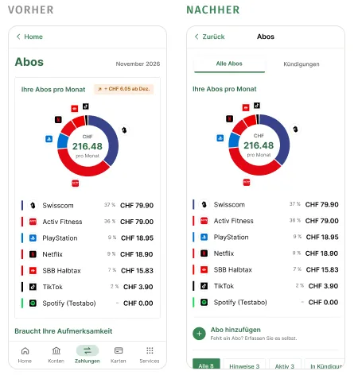
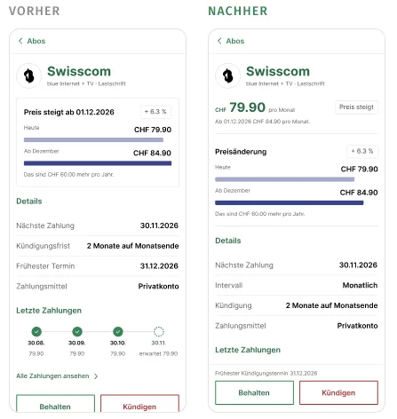
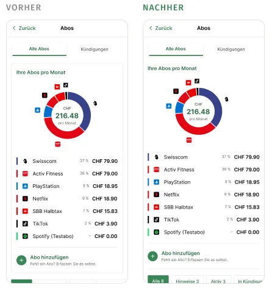
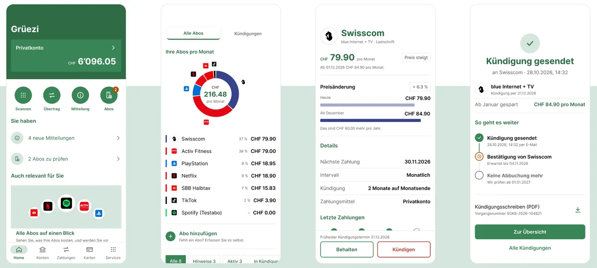

- Auftraggeber
- St.Galler Kantonalbank, Thema «Autonomous Banking with AI»
- Team
- Alexandre Filipowitz, Samuel Arnold
- Zeitraum
- September bis November 2026
- Tools
- Figma, Claude, Mobbin, Refero

Ein offenes Thema und kein Zugang zum System.
Die SGKB gab uns das Thema «Autonomous Banking with AI», aber kein Problem. In Woche 2 zeigte sich zudem: Aus Datenschutzgründen erhalten wir weder Zugriff auf das Design-System noch Einblick in den Aufbau der App.
Was das hiess
Wir mussten das Problem selbst finden und die visuelle Sprache der Bank aus öffentlichen Quellen rekonstruieren.
Wie wir reagierten
Zuerst Fokus auf Nutzerprobleme und Prozessdesign statt auf Screens. Das Design-System bauten wir später selbst aus Screenshots von Website und App.
Wo stiftet KI im Banking echten Nutzen, ohne dass Kund:innen das Vertrauen verlieren?
Zehn Wochen, eine bewusste Abkürzung.
Wir haben jede Woche ein Reporting geschrieben: Was wollten wir erreichen, wo hingen wir fest, was ändern wir? Daraus ist dieser Ablauf entstanden.
- Woche 2Fragebogen erarbeitet, Kernfragen mit dem Auftraggeber geklärt.
- Woche 3KI-Regulierung im Banking recherchiert: fragmentiert, je nach Land anders.
- Woche 4Gespräche geführt, dann bewusst in die Synthese statt weitere Daten zu sammeln.
- Woche 5Customer Journey und sechs Hypothesen aus den Clustern abgeleitet.
- Woche 6Die Pain Points waren klar: statt langer Define-Phase direkt ins Prototyping.
- Woche 7 bis 10Design-System, Prototyp, Feedbackrunden, Audit, Machbarkeit.
Erst Fakten sammeln, dann deuten.
Mit der Atomic-UX-Research-Methode haben wir getrennt, was wir wissen, was wir daraus schliessen und was wir tun könnten: Fakten aus Berichten, Foren und Konkurrenzprodukten, daraus Insights, daraus Opportunities. Danach folgten vier Interviews mit Personen zwischen 22 und 38, ausgewertet per Affinity Mapping.
Bei Chatbots fange ich gar nicht erst an, ich rufe direkt an.
Sichtbare KI war unbeliebt. Gewünscht war KI, die im Hintergrund hilft.
Bei smarten Regeln habe ich mehr Vertrauen.
Das Wort «KI» allein schafft kein Vertrauen, Nachvollziehbarkeit schon.
Ich glaube, circa acht Abos.
Niemand konnte seine Abos vollständig aufzählen. Handy und Fitness wurden vergessen.
Bei Finanzen würde ich höchstens einen Fehler erlauben.
Die Fehlertoleranz ist bei Geld fast null.
Fünf Cluster, eine Haltung: KI ja, aber leise.
Die fünf Cluster: das Abo-Chaos, Frustration im Alltag, Vertrauen und Kontrollbedürfnis, akzeptierte KI-Szenarien und verteilte Finanzen. Aus dem offenen KI-Thema wählten wir das konkreteste Problem: das Abo-Chaos. So wurde der Abo-Manager zum Ergebnis des Projekts. Die anderen Cluster bestimmten, wie wir ihn gestalten.
Human in the loop
Die KI erkennt und bereitet vor. Senden passiert nur nach aktiver Einwilligung.
KI im Hintergrund
Kein Assistent, kein Chat. Ein kleiner Hinweis zeigt, wo die KI gearbeitet hat.
Fakten statt Belehrung
«Preis steigt auf CHF 84.90» statt «Sie sollten kündigen».
Nachweis statt Versprechen
Status, Beleg und Abbuchungs-Check nach jeder Kündigung.
Der Moment, auf den es ankommt: nach dem Kündigen.
Unsere Persona ist Student in Rapperswil, erledigt fast alles am Smartphone und hat Abos für Spotify, ÖV, Fitness, Netflix und iCloud. Von der Bank erwartet er keine Bevormundung, sondern konkrete Kündigungshilfe und klares Feedback danach.
«Am liebsten würde ich alle Abos an einem Ort und mit einem Klick kündigen.»
Daraus wurde Hypothese 4: Ohne Nachweis und Abbuchungs-Check glaubt niemand, dass eine Kündigung mit einem Tipp wirklich geklappt hat.
Von der Frage zur prüfbaren Annahme
Wie könnten wir Überblick und Kündigung so mühelos machen, dass Nutzer:innen die Kontrolle über ihre Fixkosten zurückgewinnen?
Jede Hypothese folgt dem Muster «Wir glauben, dass … und messen den Erfolg daran, dass …». So wurde aus jedem Screen eine Frage an den Test. Einige Erfolgskriterien:
- 80 % finden alle aktiven Abos auf einen Blick.
- 80 % entdecken vergessene Abos.
- 75 % geben der KI die Freigabe.
- Der Kündigen-Button wird direkt gefunden, die Kündigung geht schneller.
- Die Warnung kommt vor der ersten Zahlung.
KI als Werkzeug: Wir entschieden, die KI setzte um.
Ohne Zugriff auf das SGKB-System haben wir für Design und Prototyp mit Claude und Figma gearbeitet. Die Arbeitsteilung war klar geregelt.
| Wir | Die KI |
|---|---|
| Screenshots von Website und App ausgewählt, Kriterien gesetzt | Farben gemessen, Kontraste geprüft, Variablen und Komponenten in Figma angelegt |
| Apps und Muster ausgewählt (Mobbin, Refero), Favoriten bestimmt | Gemeinsame Muster und Abweichungen zusammengefasst |
| Stil, Referenzen und jede Feedbackrunde vorgegeben | Screens gebaut, verknüpft, Varianten erzeugt |
| Audit gegen Konzept, Tokens und Anzahl Taps | Korrekturen umgesetzt |
Was sich verändert hat: Varianten in Stunden statt Tagen. Was blieb: Die KI schlug oft zu viel vor, zu viele Kacheln, zu viele Farben. Reduzieren war unsere Aufgabe.
Drei Runden, jedes Mal weniger.

Status
Farbige Badges für jeden Zustand liessen die Preiserhöhung untergehen. Neu: einheitliche neutrale Tags und Filter-Chips. Farbe bleibt den Logos.

Klickbarkeit
Kündigen lag ausserhalb des Bildschirms. Neu: Chevron an jeder Zeile, fixe Leiste mit Behalten und Kündigen.

Kacheln
Jeder Inhalt steckte in einem eigenen Rahmen. Neu: flache Abschnitte, getrennt durch feine Linien.
Nicht jede Idee hat den Test am Prototyp überstanden.
- Wisch-Stapel für neue FundeWirkte verspielt. Im Prototyp liess sich links und rechts nicht unterscheiden.Ein Fund-Detail mit zwei klaren Buttons
- Dunkler Referenz-StilPasste weder zum Design-System ohne Dark Mode noch zur Bank.Hell, eckig, Grün nur für Aktionen
- Drei Entscheidungs-Buttons«Ist ein Abo», «Kein Abo» und «Kündigen» konkurrierten.Behalten und Kündigen, «kein Abo» als Link
- Vorausgewählte EinwilligungRechtlich heikel und gegen unser Prinzip «Human in the loop».Aktive Einwilligung mit Verweis auf die Nutzungsbedingungen
- Grüner Header in der ÜbersichtViel Fläche, wenig Information.Eine Zahl oben, darunter direkt die Abos
Der Abo-Manager: vom Überblick zur sicheren Kündigung.

Einstieg
Abos als eigene Aktion auf der Startseite, mit Hinweis auf neue Funde.
Überblick
Kosten pro Monat nach Anbieter, einheitliche Status, Filter.
Entscheidung
Preisänderung als Fakt, Behalten und Kündigen immer sichtbar.
Nachweis
Status, Beleg und Abbuchungs-Check nach dem Senden.
Wie KI meinen UX-Prozess verändert hat.
Schneller zum Prototyp
Vom Design-System bis zum verknüpften Prototyp in Tagen. Mehr Zeit blieb für Feedback und Entscheidungen.
Reduktion bleibt Handarbeit
Die KI produzierte schnell viel. Gutes Design entstand erst, als wir Farben, Kacheln und Buttons wieder weggenommen haben.
Kritisch prüfen statt übernehmen
Ein Audit gegen Konzept und Tokens fand Fehler, etwa falsche Summen und vorausgewählte Einwilligungen.
Ausblick: Die sieben Hypothesen mit dem klickbaren Prototyp und den definierten Erfolgskriterien prüfen. Erkennung, Übersicht und Hinweise zu Preiserhöhungen und Testabos sind gut machbar und mit wenig Risiko verbunden. Die Kündigung selbst erst, wenn Vollmacht, Haftung und Kanäle zu den Anbietern geklärt sind, mit Nutzungsbedingungen und Einwilligung pro Kündigung.